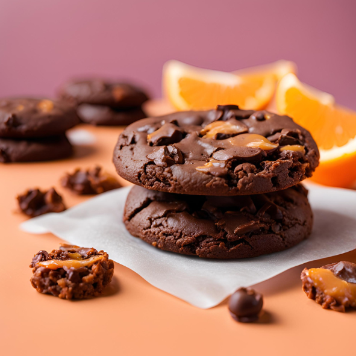

Nosotros
Érase una vez, en el vibrante corazón de Barcelona, una pequeña tienda que se convirtió en el paraíso de los amantes de las galletas. Esta tienda mágica, conocida como Monkey Cookies, nació con la misión de llevar felicidad a todas las edades a través de una sencilla pero poderosa creación: las cookies. Desde el primer día, nos propusimos hacer algo más que simples galletas. Queríamos crear momentos, recuerdos y sonrisas que se quedaran en el corazón de todos nuestros visitantes. En Monkey Cookies, creemos que cada galleta cuenta una historia. Por eso, seleccionamos con mucho cariño los ingredientes más frescos y de la más alta calidad. La harina, la mantequilla, el azúcar y el chocolate que utilizamos no son solo ingredientes; son los protagonistas de una obra que se representa cada día en nuestro pequeño pero acogedor local. Cada cookie es una pieza de arte, cuidadosamente elaborada para ofrecer una experiencia inigualable. Desde las clásicas cookies de chispas de chocolate hasta las más innovadoras y deliciosamente rellenas, cada bocado es una aventura. Nuestra historia comenzó en una callecita de Barcelona, donde el aroma de las galletas recién horneadas empezó a atraer a personas de todas partes. Las familias paseaban, los niños reían y los adultos volvían a sentir la magia de su infancia con cada mordisco. En Monkey Cookies, cada detalle importa. Desde la mezcla inicial hasta el momento en que las galletas salen del horno, ponemos todo nuestro amor y dedicación para asegurarnos de que cada cookie sea perfecta. El ambiente de nuestra tienda está diseñado para ser tan acogedor como nuestras galletas. Queremos que todos, desde los más pequeños hasta los más grandes, se sientan como en casa. Los colores vibrantes y los aromas dulces crean un espacio donde el tiempo parece detenerse y la felicidad está a la orden del día. Nos encanta ver cómo las personas se reúnen alrededor de nuestras mesas, compartiendo historias y risas, mientras disfrutan de nuestras cookies recién horneadas. Además de nuestras deliciosas galletas, nos enorgullece ofrecer una variedad de opciones para todos los gustos. Ya sea que prefieras una cookie crujiente por fuera y suave por dentro, o una completamente rellena con el más cremoso chocolate, tenemos algo especial para ti. Cada receta ha sido perfeccionada con esmero para asegurarnos de que cada bocado sea una experiencia memorable. En Monkey Cookies, no solo vendemos galletas, sino que creamos momentos de alegría que perduran en el tiempo. Nos dedicamos a la calidad, a la frescura y a la autenticidad en cada paso del proceso. Sabemos que nuestras cookies son más que un simple postre; son una forma de conectarnos, de celebrar y de disfrutar de los pequeños placeres de la vida. Nuestro compromiso con la excelencia nos lleva a experimentar continuamente con nuevos sabores e ingredientes. Nos encanta innovar y sorprender a nuestros clientes con combinaciones únicas que no encontrarán en ningún otro lugar. Desde las tradicionales galletas de chocolate hasta las exóticas mezclas con frutas y nueces, cada creación es una muestra de nuestra pasión por la repostería. Además, en Monkey Cookies, entendemos la importancia de adaptarnos a las necesidades y preferencias de nuestros clientes. Por eso, ofrecemos opciones sin gluten, veganas y bajas en azúcar, para que todos puedan disfrutar de nuestras delicias sin preocupaciones. Creemos que cada persona merece un momento dulce y especial, independientemente de sus restricciones dietéticas. Nos encanta formar parte de la comunidad de Barcelona y participar en eventos locales. Organizamos talleres de repostería para niños y adultos, donde compartimos nuestros secretos y técnicas para hacer las mejores galletas. También colaboramos con organizaciones benéficas, donando parte de nuestras ganancias para apoyar causas importantes. Para nosotros, ser parte de Monkey Cookies significa más que trabajar en una tienda de galletas; significa ser parte de una gran familia que se preocupa por los demás y por el bienestar de la comunidad. Así que, la próxima vez que estés en Barcelona, no dudes en venir a visitarnos. Deja que el aroma te guíe hasta nuestra puerta, y prepárate para ser recibido con una cálida sonrisa y, por supuesto, con una deliciosa cookie. En Monkey Cookies, siempre hay un lugar para ti y para tu amor por las galletas. ¡Te esperamos con los brazos abiertos y el horno encendido!
Volver al inicioProductos
Cookie clásica

En el corazón de Monkey Cookies, había una galleta clásica de chispas de chocolate que encantaba a todos. Hecha con la más fina harina, la mantequilla más cremosa y trozos generosos de chocolate puro, cada bocado era un viaje al paraíso. Esta deliciosa galleta, crujiente por fuera y suave por dentro, costaba solo 1 euro con 50 céntimos. Los clientes de todas las edades venían a nuestro acogedor local en Barcelona, donde el aroma dulce los recibía, ansiosos por retirar su galleta favorita. Cada visita era una oportunidad de disfrutar la calidad y el cariño puestos en cada cookie. ¡Te esperamos en Monkey Cookies!
Cookie brownie
En el mundo de Monkey Cookies, existía una irresistible cookie de brownie que deleitaba a todos. Elaborada con el cacao más puro, la mantequilla más rica y un toque de vainilla, cada mordisco era una explosión de sabor. Esta exquisita cookie, suave y densa, tenía un precio de solo 1 euro con 50 céntimos. Los amantes de las galletas acudían a nuestro encantador local en Barcelona, atraídos por el tentador aroma que emanaba del horno, deseosos de llevarse su dulce preferido. Cada visita era una celebración de la calidad y el esmero puestos en cada creación. ¡Te esperamos en Monkey Cookies!
Cookie limon
En Monkey Cookies, una especialidad que brilla con luz propia es nuestra cookie de limón. Hecha con limón fresco rallado, mantequilla de la más alta calidad y un toque de azúcar, cada mordisco ofrece una combinación perfecta de dulzura y acidez. Esta deliciosa galleta, que solo cuesta 1 euro con 50 céntimos, es una explosión de frescura. Los amantes de los sabores cítricos se acercan a nuestro acogedor local en Barcelona, guiados por el refrescante aroma, deseosos de retirar su galleta preferida. Cada visita destaca nuestro compromiso con la calidad y la dedicación en cada creación. ¡Te esperamos en Monkey Cookies!
Cookie dulce de leche
En Monkey Cookies, hay una delicia que conquista corazones: nuestra cookie rellena de dulce de leche. Hecha con una masa suave y dorada, y rellena con el más cremoso y auténtico dulce de leche, cada mordisco es una experiencia indulgente. Esta exquisita galleta, con un precio de 2 euros, es el placer perfecto para cualquier momento. Los clientes se acercan a nuestro cálido local en Barcelona, atraídos por el dulce aroma del caramelo, ansiosos por retirar su galleta favorita. Cada visita celebra nuestra dedicación a la calidad y al esmero en cada creación. ¡Te esperamos en Monkey Cookies!
Cookie avellanas
En Monkey Cookies, una de nuestras joyas es la cookie de avellanas, que encanta a todos con su sabor único. Hecha con las avellanas más frescas y trozos de chocolate oscuro, cada bocado ofrece una deliciosa combinación de crujiente y suave. Esta irresistible galleta, que cuesta solo 1 euro con 50 céntimos, es perfecta para cualquier ocasión. Los clientes acuden a nuestro acogedor local en Barcelona, guiados por el aroma tostado de las avellanas, ansiosos por retirar su galleta favorita. Cada visita refleja nuestra pasión por la calidad y el esmero en cada creación. ¡Te esperamos en Monkey Cookies!
Volver al inicioContacto
En Monkey Cookies, nos encanta estar en contacto con nuestros clientes y saber de sus experiencias con nuestras deliciosas galletas. Para ello, ponemos a tu disposición varias formas de comunicarte con nosotros. Si tienes alguna pregunta, sugerencia o simplemente quieres compartir tu amor por nuestras cookies, puedes enviarnos un correo electrónico a contacto@monkeycookies.com. Estamos siempre atentos y listos para responderte con la mayor rapidez posible. También puedes llamarnos directamente al +34 123 456 789. Nuestro equipo estará encantado de hablar contigo, resolver cualquier duda que tengas y escuchar tus valiosos comentarios. Nos encanta recibir llamadas de nuestros clientes y poder ayudarte personalmente. Si prefieres una experiencia más personal, te invitamos a visitar nuestro acogedor local en la Calle Mongoles 123, Local 3, en el corazón de Barcelona. Nuestra tienda está diseñada para que te sientas como en casa, con cómodas sillas, mesas decoradas con encanto y un ambiente que huele siempre a galletas recién horneadas. Es el lugar perfecto para disfrutar de una pausa dulce en tu día y conocer a nuestro amable equipo. Para llegar a Monkey Cookies, puedes tomar las líneas de metro Lila, Verde o Naranja, que te dejarán muy cerca de nuestra tienda. Así podrás llegar de manera fácil y rápida para disfrutar de nuestras deliciosas creaciones. Además, estamos ubicados en una zona con muchas otras atracciones, así que tu visita puede convertirse en una divertida excursión por el corazón de la ciudad. Otra opción es dejar un comentario debajo con tu correo electrónico. Nos encanta leer tus mensajes y siempre respondemos con la mayor prontitud posible. No dudes en compartir tus impresiones, sugerencias o simplemente un saludo. Cada mensaje que recibimos nos motiva a seguir mejorando y ofreciendo lo mejor a nuestros queridos clientes. Esperamos que te animes a ponerte en contacto con nosotros a través de cualquiera de estos medios. En Monkey Cookies, valoramos mucho tu opinión y nos encanta estar en comunicación contigo. ¡Te esperamos con los brazos abiertos y un montón de galletas deliciosas! Cordiales saludos del equipo de Monkey Cookies.
Dejanos tu comentario.
Galeria
Referencias
María G. "Desde que descubrí Monkey Cookies, no puedo dejar de venir. La atención es siempre amable y personalizada, y las cookies son simplemente las mejores que he probado. Mi favorita es la de limón, es fresca y deliciosa. Recomiendo a todos que pasen por aquí y prueben estas delicias. ¡Gracias por todo, equipo de Monkey Cookies!"
Carlos R. "Llevo a mis hijos a Monkey Cookies cada semana y siempre es una alegría. Les encantan las cookies rellenas de dulce de leche, y yo disfruto del ambiente acogedor y el servicio atento. La ubicación en el corazón de Barcelona es perfecta para nuestras salidas familiares. ¡Sin duda, las mejores galletas de la ciudad!"
Lucía M. "Soy fan de las galletas de avena y pasas, y las de Monkey Cookies son simplemente sublimes. Me encanta cómo cuidan cada detalle, desde la frescura de los ingredientes hasta la presentación. El personal es siempre tan amable y servicial. ¡No puedo esperar a mi próxima visita!"
Javier L. "Trabajo cerca de Monkey Cookies y es mi lugar favorito para una pausa dulce. La cookie de brownie es increíble, rica y perfecta para recargar energías. La atención siempre es rápida y cordial, y el local es muy cómodo. ¡Un sitio que siempre recomiendo!"
Elena S. "Descubrí Monkey Cookies por recomendación de un amigo, y fue amor al primer bocado. La cookie de mantequilla de maní es mi perdición. Además, el equipo es siempre tan amable y atento. La ubicación es ideal y el ambiente muy acogedor. ¡Gracias por las mejores galletas!"
Miguel T. "Cada vez que paso por Barcelona, una parada obligatoria es Monkey Cookies. La variedad y calidad de las galletas es impresionante. Mi preferida es la de coco y chocolate blanco, ¡es como un trocito de paraíso! Además, la atención siempre es de primera. ¡Sigan así!"
Sofía P. "Llevé a mis amigas a Monkey Cookies y todas quedamos encantadas. El local es muy acogedor y el personal muy atento. Las cookies de chispas de chocolate fueron un éxito total. Es el lugar perfecto para reunirse y disfrutar de un momento dulce. ¡Gracias por todo!"
David H. "La primera vez que entré a Monkey Cookies, me sentí como en casa. El aroma a galletas recién horneadas es irresistible. La cookie de avellanas es mi favorita, crujiente y deliciosa. El personal es siempre tan amable y servicial. ¡Un lugar que recomiendo sin dudar!"
Ana B. "Monkey Cookies ha superado todas mis expectativas. La cookie de limón es simplemente perfecta, con un sabor fresco y equilibrado. La atención es siempre excelente y el ambiente muy acogedor. Me encanta venir aquí y disfrutar de estas delicias. ¡Gracias por ser tan geniales!"